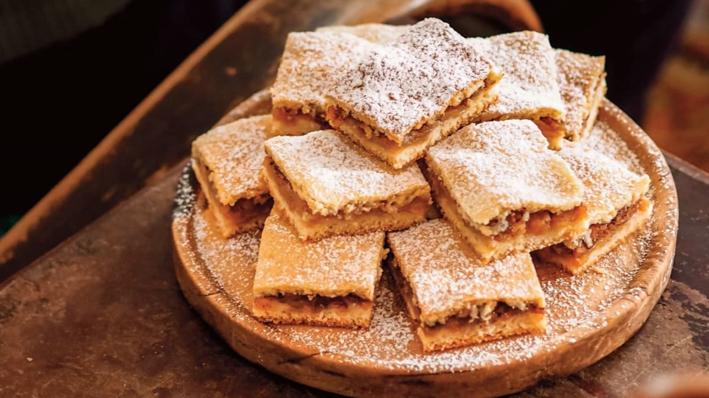

Grandma's Apple pie

A juicy layer of grated apples between two layers of fragile yet soft sweet dough.
Did your grandmother bake you an apple pie like this too?
If not, you will experience
summer at the cottage, if yes and you do not have a recipe, try this one and maybe
you will appear as a magical grandmother for your children,
grandchildren and friends.
Ingredients
Dough
- Flour - 500 g
- Butter - 250 g
- White sugar - 80-100 g
- White yogurt - 100-140 g
- Baking powder - 1 bag
- Butter (for erasing the sheet metal)
- Flour (for underlaying)
Filling
- Apples - 12-16 ks
- Breadcrumbs - 1 spoon
- Ground cinnamon - 3 tablespoons
- Vanilla sugar - 1 tablespoon
Steps
- Sift the flour into a bowl, cut the butter into it and stir the mixture
with a knife so that the pieces of butter are coated with flour.
Add sugar and yogurt, mix again with a knife and sprinkle with baking powder.
Knead a smooth dough. You can also process it in a robot with a whisk attachment.
Store the dough in the refrigerator.
- Peel the apples, cut out the core and grate them coarsely or cut them into
thin slices.
- Grease the tray with butter and line it with baking paper.
Preheat the oven to 170°C.
- Divide the rested dough into two halves. Roll one out on a lightly floured
surface to a sheet the size of a baking sheet. Flatten it in a baking sheet
and sprinkle with breadcrumbs.
- Arrange the apples evenly on the dough with the breadcrumbs.
Sprinkle with cinnamon and sugar.
Roll out the remaining dough on a floured
surface to the same size sheet, cover the apples with it and smooth the edges.
Prick the dough in several places with a fork to allow steam to
escape during baking.
- Bake in the preheated oven for about 30 minutes until golden,
until a skewer inserted into the top sheet of dough comes out clean and dry.